Настройка интеграции IP-АТС Yeastar S серии с amoCRM при помощи сервиса Callbee
Info
Для подключения интеграции необходимо поочередно выполнить пункты данного руководства в той последовательности, как они описаны.
Необходимые требования
- IP-АТС серии S (S20, S50, S100, S300).
- Статический IP адрес (необходимо приобрести у вашего интернет-провайдера).
Важные замечания
Info
- Интеграция поддерживает внутренние номера до 4-х знаков включительно.
- Интеграция не преобразует формат телефонных номеров, необходимо работать в международном формате как в amoCRM, так и на АТС.
- Важно понимать, что голосовой SIP трафик за рамки вашей АТС никуда не выходит.
Работа интеграции
Интеграция реализует связь по AMI протоколу с вашей IP-АТС Yeastar S серии и API amoCRM, а также осуществляет на стороне нашего сервера конвертацию файлов аудиозаписей разговоров из формата wav (записи разговоров создаются на IP-АТС Yeastar только в формате wav) в формат mp3 сохраняя их на Google Drive и отправкой ссылки на аудиозапись разговора в amoCRM.
Интеграция имеет возможность получить запись разговора с IP-АТС по FTP (для IP-АТС Yeastar S20) или API (для IP-АТС Yeastar S50/S100/S300) в зависимости от настроек интеграции и самой IP-АТС.
Интеграция взаимодействует с amoCRM по API: отправляет запросы на проверку номера телефона, создание сущностей в amoCRM и проброс ссылки на запись разговора.
1. Настройка IP-АТС Yeastar
1.1 Настройка сетевых служб
Открываем админ панель АТС и переходим в раздел Настройки - Система – Безопасность далее переходим на вкладку Сетевые службы и настраиваем следующее:
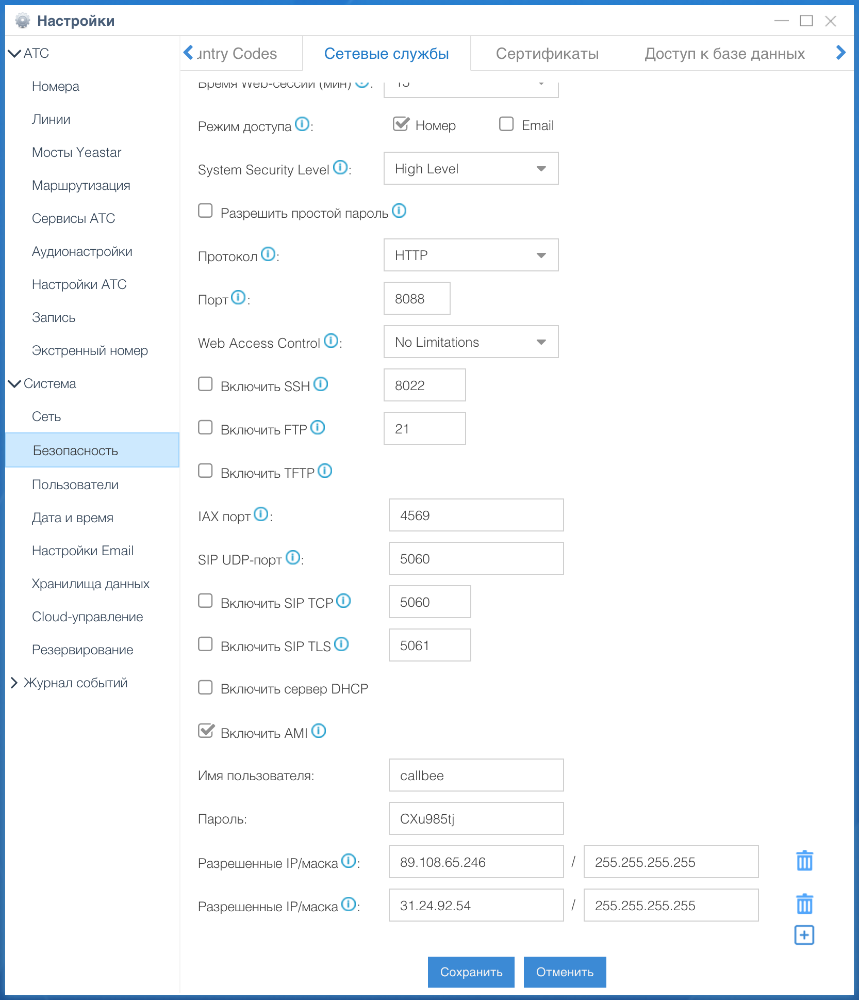
- Активируем пункт Включить AMI
- Изменяем стандартные Имя пользователя и Пароль (эти имя пользователя и пароль нужно будет прописать в личном кабинете Callbee)
- В появившемся поле Разрешённые IP/Маска прописываем IP адреса из списка разрешенных
- Меняем протокол с HTTPS на HTTP (Смену протокола следует производить если не установлен валидный сертификат)
для Yeastar S20
- Активируем пункт Включить FTP
- Активируем пункт Включить TFTP
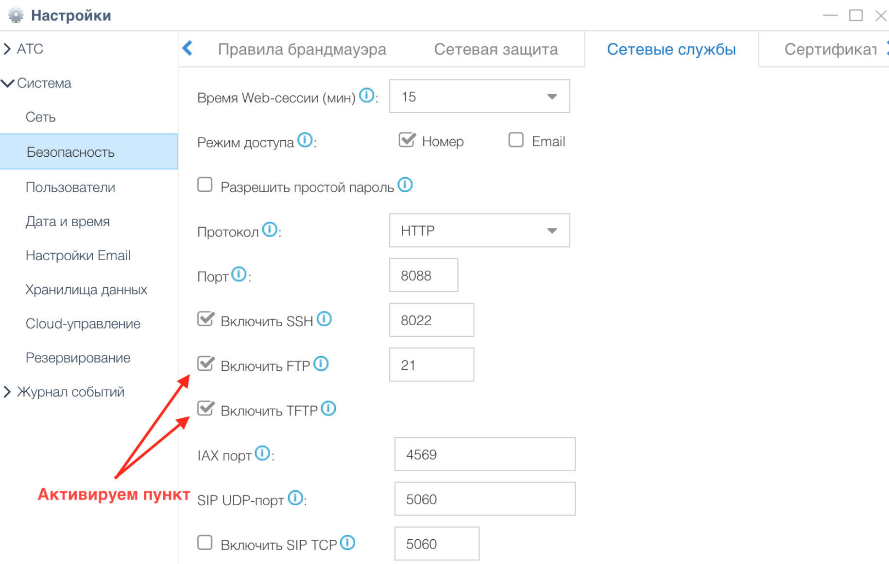
1.2 Настройка хранилища данных
для Yeastar S20
Переходим в раздел Настройки - Система - Хранилища данных и переходим во вкладку File Share:
- Активируем Активировать FTP доступ
- Активируем Активировать файловое хранилище
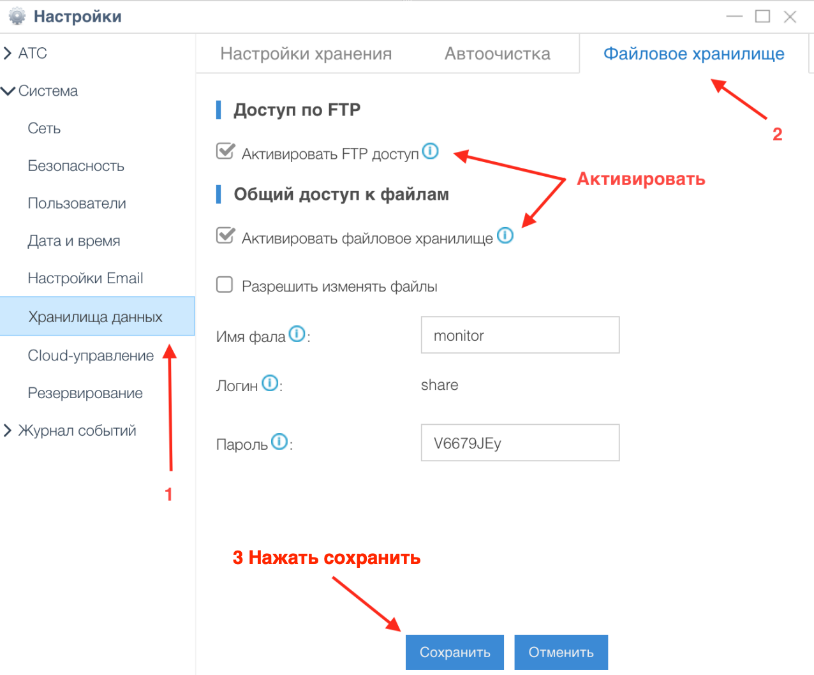
1.3 Настройка API
для Yeastar S50/S100/S300
Переходим в раздел Настройки АТС - Настройки АТС - API:
- Активируем API
- Активируем пункт Монитор АТС всех номеров и линий
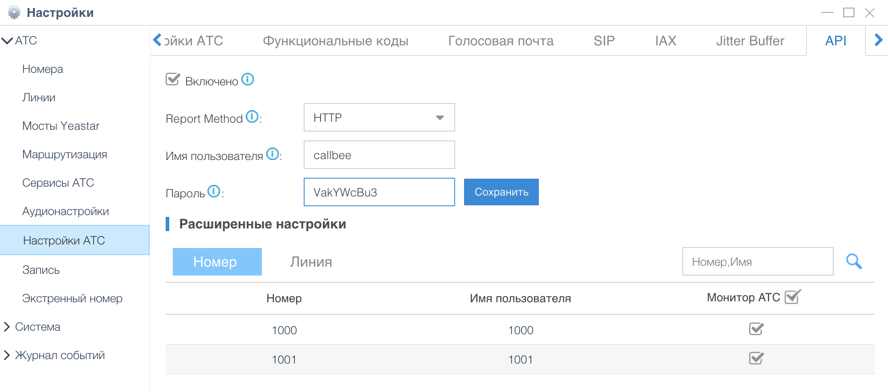
2. Сетевые настройки
Для того, чтобы интеграция могла подключится к вашей АТС, у вас обязательно должен быть статический IP адрес и проброшены через NAT к АТС следующие порты:
- 5038 TCP – для доступа к AMI Yeastar
- 21 TCP – для доступа к FTP Yeastar (для Yeastar S20)
- 8088 (порт к WEB интерфейсу по умолчанию) HTTP/HTTPS – для доступа к API Yeastar
Info
Интерфейс настройки проброса портов сильно отличается в зависимости от используемого в вашей сети маршрутизатора. Актуальную инструкцию по пробросу портов под ваш маршрутизатор вы можете найти на официальном сайте производителя маршрутизатора.
3. Настройка интеграции в личном кабинете сервиса Callbee
В личном кабинете сервиса Callbee для интеграции с amoCRM необходимо:
- Во вкладке Integration нажить на кнопку Install integration и выбрать вкладку AMOCRM WITH YEASTAR либо нажать кнопку Install на блоке с типом интеграции AMOCRM WITH YEASTAR
- Заполнить все необходимые пункты для интеграции
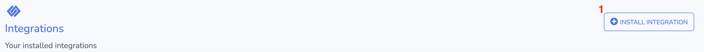
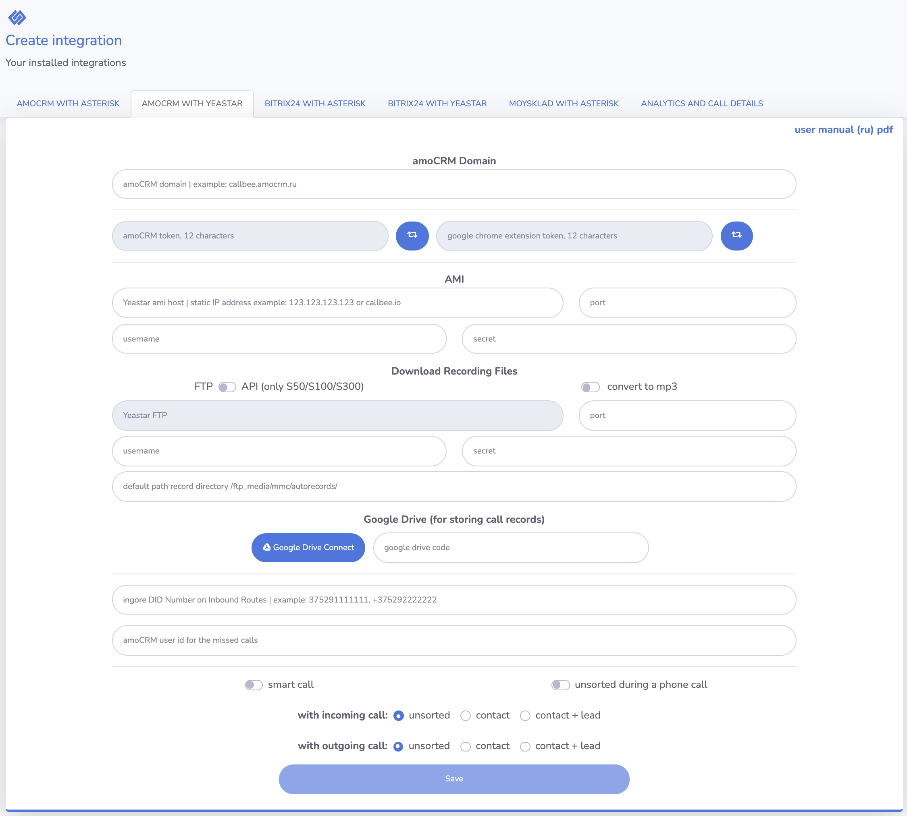
- В поле amoCRM Domain обязательно необходимо внести ваш домен amoCRM (например, callbee.amocrm.ru без https://)
- amoCRM TOKEN - Токен для соединения с AmoCRM, этот токен необходимо будет вставить в интеграцию на стороне AmoCRM (токен должен быть из 12 символов, правее есть кнопка генерации токена). Настройка интеграции на стороне AmoCRM описана далее
- Google Chrome TOKEN - Токен для соединения с расширением в браузере Google Chrome, этот токен необходимо будет вставить в параметрах расширения (токен должен быть из 12 символов, правее есть кнопка генерации токена). Настройка расширения описана далее
- Asterisk AMI Host/Port/Username/Secret - Настройка подключения по AMI к ATC (IP-адрес сервера или доменное имя, порт, имя пользователя, пароль)
-
FTP или API
FTP для Yeastar S20
- FTP host - ваш статический IP адрес для подключения к FTP Yeastar
- FTP port - ваш порт для подключения к FTP Yeastar (стандартный порт FTP 21)
- FTP username - имя пользователя к FTP Yeastar
- FTP secret - пароль к FTP Yeastar
- Path records directory - если оставить поле пустым, будет использоваться стандартный путь для хранении файлов записей разговоров /ftp_media mmc/autorecords/
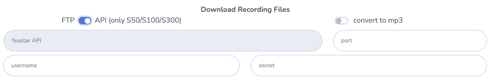
API для Yeastar S50/S100/S300
- API host - ваш статический IP адрес для подключения к API Yeastar
- API port - ваш порт для подключения к API Yeastar
- API username - имя пользователя к API Yeastar
- API secret - пароль к API Yeastar
-
Google Drive - Подключение Google Drive к интеграции
Нажимаем на Google Drive Connect
Заходим под своим аккаунтом Google, далее нажимаем Разрешить
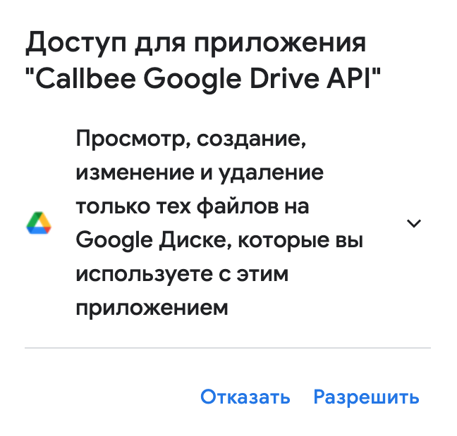
Далее нажимаем Разрешить
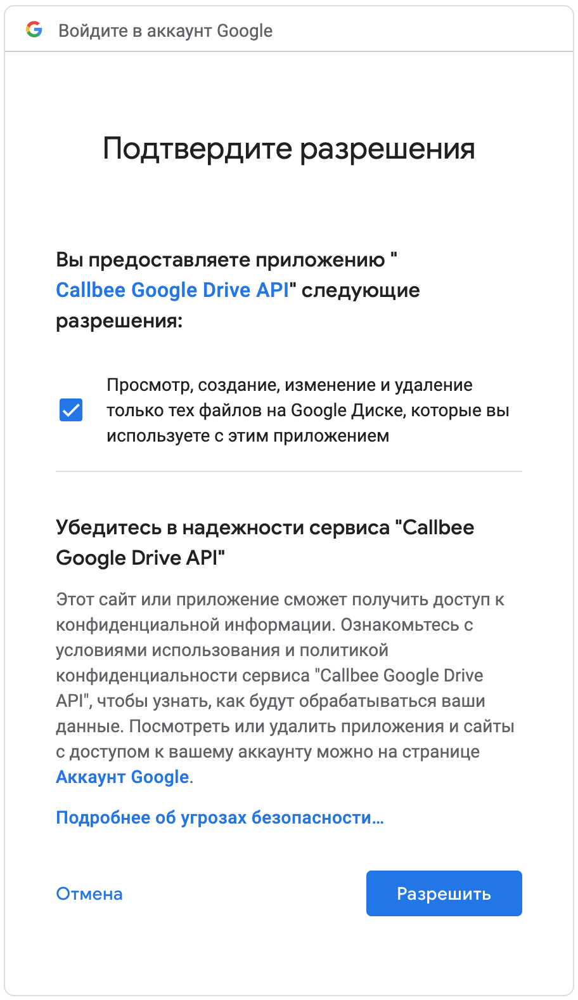
Копируем код и вставляем в поле google drive code
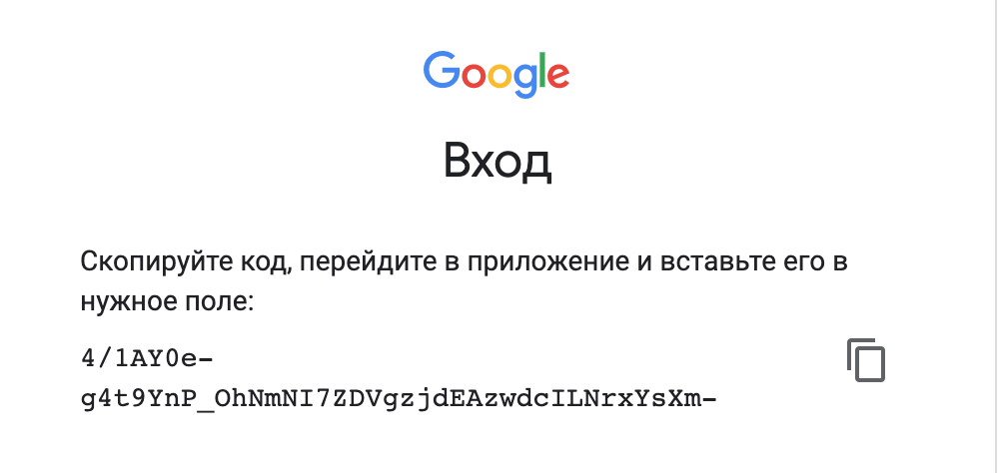
-
Convert to mp3 - конвертировать аудиозаписи в mp3
- Ignore DID numbers - DID номер(а) через запятую на входящим маршруте (интеграция будет игнорировать эти входящие маршруты)
- amoCRM user ID for missed calls - ID пользователя в amoCRM для пропущенных вызовов (ответственный пользователь за пропущенные вызовы для новых клиентов, которых нет в amoCRM, например)
- Smart call - Включение умной маршрутизации (перевод звонка на ответственного сотрудника)
- Unsorted during a phone call - Создание неразобранного в amoCRM в момент ответа на входящий звонок
- Incoming call - При входящем звонке создавать Неразобранное, Контакт, Контакт + Сделка
- Outgoing calls - При исходящем звонке создавать Неразобранное, Контакт, Контакт + Сделка
- Save - Сохранение настроек
4. Подключение интеграции на стороне amoCRM
Внимание
- Просим обратить особое внимание - название, логотипы могут отличаться от скриншотов данного руководства
- Интеграция будет работать только для внутренних номеров, которые вы указали у сотрудников
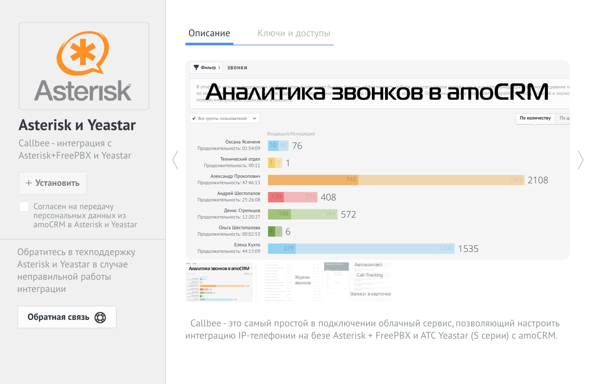
- В настройках amoCRM, выбрать пункт Интеграции, сверху в строке поиска ищем по названию Callbee, либо в разделе Телефония найти интеграцию Callbee (Asterisk и Yeastar), согласившись с условиями нажать на кнопку Установить
- Далее необходимо прописать внутренние номера сотрудников.
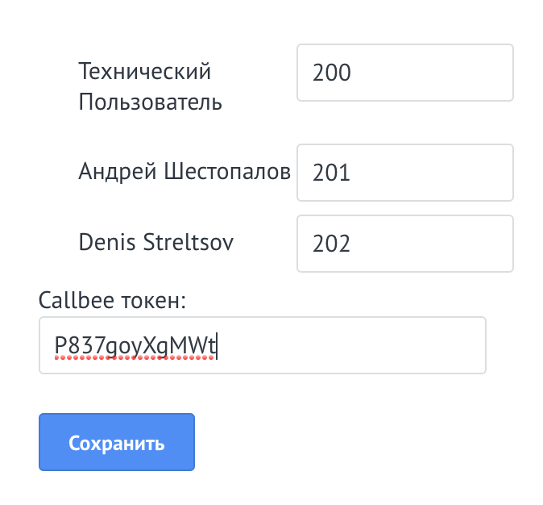
- В поле Token Уникальный токен, необходимо скопировать из пункта AMOCRM TOKEN из настроек вашей интеграции в личном кабинете
- Сохранить настройки.
- В личном кабинете сервиса Callbee после всех настроек на стороне amoCRM необходимо перезагрузить интеграцию.
5. Подключение и настройка расширения в браузере Google Chrome
Расширение Callbee в google chrome используется для оповещения сотрудника о поступающих вызовах.
Установка:
- В магазине google chrome находим расширение Callbee и устанавливаем его.
- Либо перейти по ссылке и установить.
Настройка:
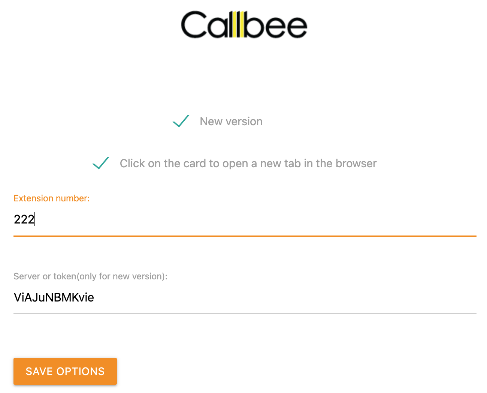
- New version - Отметить пункт (обязательно).
- Click on the card to open a new tab in the browser - Переход в карточку контакта по клику всплывающей карточки в новой вкладке браузера, по необходимости.
- Extension number - Внутренний номер телефона сотрудника.
- Server or token - Уникальный токен, необходимо скопировать из пункта GOOGLE CHROME EXTENSION TOKEN из настроек вашей интеграции в личном кабинете.
- Сохраняем настройки.
Статус расширения:

ON - работает умная маршрутизация, отображаются оповещения
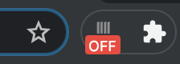
OFF - отключены все оповещения, не работает умная маршрутизация
На данном этапе настройка считается выполненной.